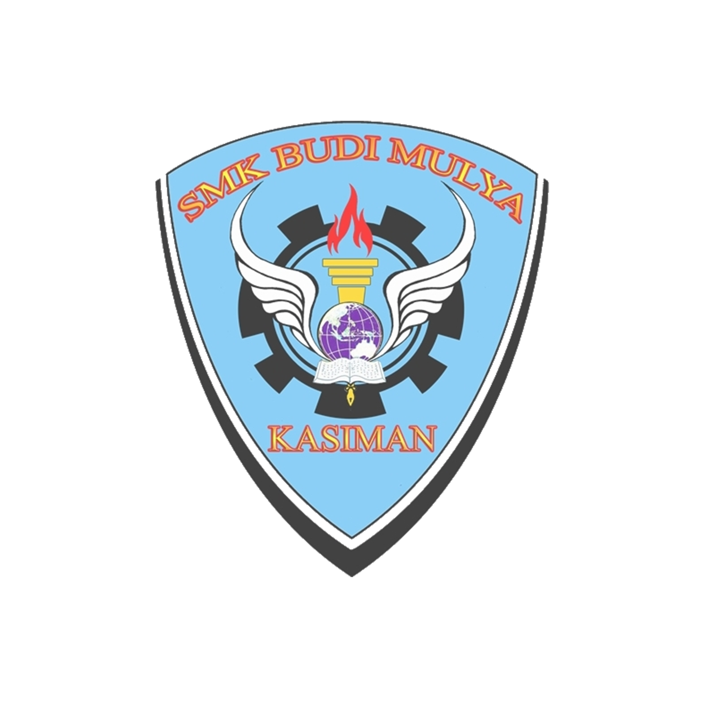

<!doctype html>
<html lang="id">
<head>
<meta charset="utf-8">
<meta name="viewport" content="width=device-width,initial-scale=1">
<title>Template Kolase SMKS Budi Mulya</title>
<link rel="manifest" href="manifest.json">
<meta name="theme-color" content="#003366">
<link rel="icon" href="icon-192.png">
<link rel="apple-touch-icon" href="icon-192.png">
<link href="https://fonts.googleapis.com/css2?family=Cinzel:wght@400;600&family=Bodoni+Moda:wght@400;500;600&family=EB+Garamond:wght@400;500&family=Poppins:wght@500;600&family=Dancing+Script:wght@500&family=Cormorant+Garamond:wght@500;600&family=Jost:wght@400;500&family=Playfair+Display:wght@500&family=Montserrat:wght@500&display=swap" rel="stylesheet">
<link href="https://fonts.googleapis.com/css2?family=Libre+Baskerville&family=Lora&family=Libre+Caslon+Text&family=Cormorant&family=Marcellus&family=Prata&family=DM+Serif+Display&family=Playfair+Display+SC&family=Great+Vibes&family=Allura&family=Pinyon+Script&family=Parisienne&family=Sacramento&family=Alex+Brush&family=Mrs+Saint+Delafield&family=Italianno&family=Satisfy&family=Raleway:wght@400;500&family=Lato:wght@400;700&family=Josefin+Sans:wght@400;500&display=swap" rel="stylesheet">
<style>
:root{--bg:#001833;--pn:#002147;--ln:#003580;--tx:#e8f0fe;--mu:#90aacb;--ac:#f5a623}
*{box-sizing:border-box}
body{margin:0;background:var(--bg);color:var(--tx);font:14px/1.4 Jost,system-ui,sans-serif;display:flex;min-height:100vh}
main{flex:1;display:flex;align-items:center;justify-content:center;padding:18px;min-width:0}
canvas{flex:none;max-width:100%;max-height:94vh;box-shadow:0 12px 44px #000a;touch-action:none;cursor:grab}
aside{width:330px;background:var(--pn);border-left:1px solid var(--ln);padding:16px;overflow:auto;max-height:100vh;position:sticky;top:0;align-self:flex-start}
h3{margin:18px 0 8px;font:600 15px Jost;color:var(--ac)}
h3:first-child{margin-top:0}
p.h{color:var(--mu);margin:0 0 6px;font-size:12.5px}
input,select,button{font:inherit;color:var(--tx);background:#0f1511;border:1px solid var(--ln);border-radius:6px;padding:7px 9px;width:100%;margin:0 0 6px}
input[type=color]{padding:2px;height:34px}
input[type=range]{padding:0;accent-color:var(--ac);margin:0}
button{cursor:pointer;background:#202b24}
button:hover{border-color:var(--ac)}
button.pri{background:var(--ac);color:#001833;font-weight:500;border-color:var(--ac)}
button.on{border-color:var(--ac);color:var(--ac)}
label{display:block;color:var(--mu);font-size:12.5px;margin:4px 0}
.row{display:flex;gap:6px}.row>*{flex:1;min-width:0}
.chips{display:grid;grid-template-columns:repeat(3,1fr);gap:6px}
.chips button{margin:0;padding:8px 4px}
:focus-visible{outline:2px solid var(--ac);outline-offset:1px}
@media(max-width:820px){body{flex-direction:column}aside{width:100%;max-height:none;position:static;border:0}canvas{max-height:38vh}main{position:sticky;top:0;z-index:5;background:var(--bg);padding:6px 6px 8px;box-shadow:0 6px 14px #0008}}
.brand{display:flex;align-items:center;gap:10px;margin-bottom:14px}.brand img{border-radius:10px}.brand b{font:600 15px Jost;color:var(--tx)}
.chips button{display:flex;flex-direction:column;align-items:center;gap:5px;padding:6px 4px}
.chips button canvas{width:100%;height:auto;max-width:none;max-height:none;box-shadow:none;cursor:pointer;border-radius:3px}
.chips button span{font-size:12px;line-height:1.2;text-align:center}
.brand b{flex:1}.brand button{width:36px;margin:0;padding:6px}
dialog{background:var(--pn);color:var(--tx);border:1px solid var(--ln);border-radius:10px;max-width:420px}dialog::backdrop{background:#000a}dialog li{margin:6px 0}
</style>
</head>
<body>
<main><canvas id="cv" width="1080" height="1350"></canvas></main>
<aside>
<div class="brand"><b>Kolase SMKS Budi Mulya</b><button id="undo" title="Undo (Ctrl+Z)">↶</button><button id="redo" title="Redo (Ctrl+Y)">↷</button><button id="help" title="Panduan">?</button></div>
<dialog id="dlg"><h3>Mulai cepat</h3><ol><li>Pilih ukuran (Instagram 4:5, Story 9:16, dan lainnya).</li><li>Pilih template dari daftar bergambar.</li><li>Klik kotak di kanvas, lalu Tambah foto atau Sebar banyak foto.</li><li>Isi teks, pilih font dan warna.</li><li>Tambahkan musik dan atur durasi bila perlu.</li><li>Simpan PNG atau Rekam video. Proyek tersimpan otomatis di perangkat ini.</li></ol><button id="dclose" class="pri">Mengerti</button></dialog>
<h3>Carousel</h3>
<div id="sbar" class="chips" style="grid-template-columns:repeat(6,1fr)"></div>
<div class="row"><button id="sadd">+ Slide</button><button id="sdup">Duplikat</button><button id="sdel">Hapus</button></div>
<div class="row"><button id="sl">Pindah ←</button><button id="sr">Pindah →</button></div>
<button id="sdemo">Isi contoh 8 slide kegiatan</button>
<p class="h">Tiap slide punya template, foto, teks, font, warna latar, dan gaya bingkai sendiri. Animasi dan ukuran berlaku untuk semua slide.</p>

<h3>Ukuran</h3>
<select id="size">
<option value="1080x1350">Instagram post 4:5 (1080×1350)</option>
<option value="1080x1440">Instagram post 3:4 (1080×1440)</option>
<option value="1080x1920">TikTok / Reels / Story 9:16</option>
<option value="1080x1080">Persegi 1:1</option>
<option value="1920x1080">Landscape 16:9</option>
<option value="c">Ukuran sendiri…</option>
</select>
<label><input id="safe" type="checkbox" style="width:auto;margin-right:6px">Tampilkan area aman Story/Reels</label>
<div class="row" id="cust" hidden><input id="cw" type="number" min="200" max="4000" value="1080"><input id="ch" type="number" min="200" max="4000" value="1350"></div>

<h3>Template</h3>
<div id="lays" class="chips"></div>
<div class="row"><input id="tname" placeholder="Nama template sendiri"><button id="tsave">Simpan tata letak ini</button></div>
<div class="row"><select id="tsel"></select><button id="tdel">Hapus template</button></div>
<button id="auto" class="pri" hidden>Unggah foto: slideshow otomatis</button>
<p class="h" id="autoh" hidden>Pilih banyak foto sekaligus. Foto dibagi bergiliran ke 4 kotak dan tiap kotak jadi slideshow sendiri. Cocok untuk foto kegiatan kelas.</p>

<h3>Bingkai</h3>
<div class="row"><select id="shape"><option value="oval">Oval</option><option value="circle">Lingkaran</option><option value="arch">Lengkung</option><option value="rounded">Sudut membulat</option><option value="rect">Persegi</option><option value="hexa">Segi enam</option><option value="octa">Segi delapan</option><option value="diamond">Belah ketupat</option><option value="heart">Hati</option></select>
<select id="bstyle"><option value="scallop">Bergerigi</option><option value="solid">Polos</option><option value="double">Garis ganda</option><option value="stamp">Perangko</option><option value="gold">Emas mengilap</option><option value="goldline">Garis emas ganda</option><option value="line">Garis tipis</option><option value="glow">Bercahaya</option><option value="dots">Titik-titik</option><option value="none">Tanpa bingkai</option></select></div>
<div class="row"><label>Warna<input id="fc" type="color"></label><label>Tebal<input id="fw" type="range" min=".01" max=".18" step=".005"></label></div>
<div class="row"><button id="frb">Frame PNG sendiri</button><button id="frx">Hapus</button></div>
<label>Ukuran frame PNG<input id="fz" type="range" min="1" max="2" step=".01"></label>
<input id="frf" type="file" accept="image/png,image/webp" hidden>
<p class="h">Pakai PNG transparan (bagian tengahnya bolong), misalnya frame emas ornamen. Atur slider sampai lubangnya pas dengan foto, dan pilih bentuk bingkai yang mirip lubangnya. Saat PNG aktif, gaya tepi bawaan tidak dipakai.</p>
<label><input id="fall" type="checkbox" style="width:auto;margin-right:6px">Bingkai di semua kotak</label>
<p class="h">Tanpa dicentang, bingkai hanya muncul di template Bingkai dan Trio.</p>

<h3>Teks</h3>
<input id="title" placeholder="Nama Kegiatan / Acara Sekolah (| = baris baru)">
<input id="sub" placeholder="Tanggal / Kelas / Jurusan">
<input id="foot" placeholder="Dokumentasi / Nama Guru / Staf">
<input id="quote" placeholder="Motto / Visi / Deskripsi Kegiatan (| = baris baru)">
<input id="quote2" placeholder="Deskripsi tambahan / nama siswa (opsional)">
<input id="wl" placeholder="Kolom kiri (mis. Tahun|Ajaran|2024/2025)">
<input id="wr" placeholder="Kolom kanan (mis. Kelas|XII|TKJ)">
<label>Font judul<select id="font"></select></label>
<label>Font teks lain (tanggal, kredit, kolom)<select id="bfont"></select></label>
<label>Font kutipan dan paragraf<select id="qfont"></select></label>
<button id="fadd">Impor font sendiri (.ttf / .otf / .woff)</button>
<input id="ffile" type="file" accept=".ttf,.otf,.woff,.woff2,font/*" multiple hidden>
<p class="h" id="fmsg">Font yang diimpor tersimpan di perangkat ini dan ikut tersimpan di proyek.</p>
<label>Jarak huruf<input id="ls" type="range" min="0" max=".3" step=".01"></label>
<label>Ukuran teks<input id="ts" type="range" min=".6" max="1.6" step=".05"></label>

<h3>Warna</h3>
<div class="row">
<label>Latar<input id="bg" type="color"></label>
<label>Teks<input id="txt" type="color"></label>
<label>Aksen<input id="ac" type="color"></label>
</div>
<div class="row"><button id="bgb">Gambar latar</button><button id="bgx">Hapus</button></div>
<label>Gelapkan gambar<input id="dim" type="range" min="0" max=".8" step=".05"></label>
<input id="bgf" type="file" accept="image/*" hidden>
<label>Butiran film (grain)<input id="grain" type="range" min="0" max="1" step=".05"></label>
<h3>Logo Sekolah</h3>
<div class="row"><button id="wmb">Pilih Logo Sekolah</button><button id="wmx">Hapus</button></div>
<select id="wmp"><option value="br">Kanan bawah</option><option value="bl">Kiri bawah</option><option value="tr">Kanan atas</option><option value="tl">Kiri atas</option><option value="bc">Tengah bawah</option><option value="tc">Tengah atas</option><option value="cc">Tengah</option></select>
<label>Ukuran logo<input id="wms" type="range" min=".05" max=".6" step=".01"></label>
<label>Transparansi logo<input id="wmo" type="range" min=".1" max="1" step=".05"></label>
<input id="wmf" type="file" accept="image/*" hidden>

<h3>Animasi</h3>
<select id="trans">
<option value="rand">Acak (otomatis)</option><option value="reel">Gulir bergantian (reel)</option><option value="slide">Geser kiri</option><option value="left">Geser kanan</option><option value="down">Geser bawah</option><option value="zoomout">Zoom keluar</option><option value="wipev">Sapu vertikal</option><option value="up">Geser atas</option><option value="fade">Pudar</option><option value="zoom">Zoom</option><option value="wipe">Sapu</option>
</select>
<label>Lama tiap foto<input id="hold" type="range" min=".5" max="6" step=".1"></label>
<label>Lama transisi<input id="tdur" type="range" min=".15" max="1.5" step=".05"></label>
<label>Jeda antar kotak<input id="stag" type="range" min="0" max="1.5" step=".05"></label>

<h3>Kotak terpilih: <span id="selname">1</span></h3>
<p class="h">Klik kotak di kanvas. Seret di dalam kotak untuk menggeser foto, atau seret keluar dari kotak ke kotak lain untuk menukar posisinya. Klik dua kali untuk menambah foto. Tiap kotak boleh berisi banyak foto, nanti bergantian dengan transisi.</p>
<div class="row"><button id="add">Tambah foto</button><button id="clr">Kosongkan</button></div>
<button id="all">Sebar banyak foto ke semua kotak</button>
<label>Zoom foto<input id="zoom" type="range" min="1" max="3" step=".01"></label>
<label>Geser kotak kiri-kanan<input id="gdx" type="range" min="-.5" max=".5" step=".005"></label>
<label>Geser kotak atas-bawah<input id="gdy" type="range" min="-.5" max=".5" step=".005"></label>
<label>Lebar kotak<input id="gdw" type="range" min="-.4" max=".4" step=".005"></label>
<label>Tinggi kotak<input id="gdh" type="range" min="-.4" max=".4" step=".005"></label>
<label>Hitam putih<input id="flbw" type="range" min="0" max="1" step=".05"></label>
<label>Kecerahan<input id="flbr" type="range" min=".5" max="1.5" step=".05"></label>
<label>Kontras<input id="flct" type="range" min=".5" max="1.5" step=".05"></label>
<button id="greset">Reset posisi, ukuran, dan filter kotak</button>
<p class="h" id="cnt"></p>
<input id="file" type="file" accept="image/*" multiple hidden>

<h3>Stiker dan teks bebas</h3>
<div class="chips" id="stk">
<button data-t="text">+ Teks</button><button data-t="seal">Segel emas</button><button data-t="tape">Selotip</button>
<button data-t="line">Garis</button><button data-t="ring">Cincin</button><button data-t="sparkle">Kilau</button>
<button data-t="heart">Hati</button><button id="stkimg">Stiker PNG</button>
</div>
<input id="stkf" type="file" accept="image/*" hidden>
<div id="ipanel" hidden>
<input id="itx" placeholder="Teks (| untuk baris baru)">
<select id="ifnt"></select>
<div class="row"><label>Warna<input id="icol" type="color"></label></div>
<label>Ukuran<input id="isz" type="range" min=".02" max=".8" step=".005"></label>
<label>Putar<input id="irot" type="range" min="-180" max="180" step="1"></label>
<label>Transparan<input id="iop" type="range" min=".1" max="1" step=".05"></label>
<div class="row"><button id="idup">Duplikat</button><button id="idel">Hapus</button></div>
</div>
<p class="h">Ketuk stiker atau teks di kanvas untuk memilih, lalu seret untuk memindah. Klik dua kali teks mana pun di kanvas untuk mengubah isinya.</p>

<h3>Durasi dan musik</h3>
<label>Durasi video (detik, 0 = otomatis)<input id="dur" type="number" min="0" max="180" step="1"></label>
<div class="row"><button class="dp" data-d="15">15</button><button class="dp" data-d="30">30</button><button class="dp" data-d="60">60</button><button class="dp" data-d="0">Auto</button></div>
<div class="row"><button id="mpick">Pilih musik</button><button id="mclr">Hapus musik</button></div>
<p class="h" id="mname">Belum ada musik.</p>
<canvas id="wf" width="600" height="80" style="width:100%;height:64px;max-width:none;max-height:none;box-shadow:none;cursor:ew-resize;border:1px solid var(--ln);border-radius:6px;margin-bottom:6px"></canvas>
<div class="row"><label>Mulai (dtk)<input id="ma" type="number" min="0" step="0.5"></label><label>Selesai (dtk)<input id="mb" type="number" min="1" step="0.5"></label></div>
<p class="h" id="mlen"></p>
<button id="mprev" class="pri">▶ Pratinjau video + musik</button>
<div class="row"><button id="mplay">Putar potongan</button><button id="msync">Samakan durasi video</button></div>
<label>Volume musik<input id="vol" type="range" min="0" max="1" step=".05"></label>
<label><input id="fade" type="checkbox" style="width:auto;margin-right:6px">Fade in dan fade out</label>
<label><input id="beat" type="checkbox" style="width:auto;margin-right:6px">Ganti foto mengikuti ketukan musik</label>
<label>Ganti foto setiap<select id="bpc"><option value="1">1 ketukan</option><option value="2">2 ketukan</option><option value="4">4 ketukan</option></select></label>
<p class="h" id="bpm"></p>
<input id="mfile" type="file" accept="audio/*" hidden>
<p class="h">Potongan musik diulang kalau durasi video lebih panjang. Musik ikut terekam di setiap video.</p>

<h3>Simpan</h3>
<label>Kualitas video<select id="vq"><option value="1">Tinggi (ukuran asli)</option><option value=".75">Sedang (75%)</option><option value=".5">Ringan (50%), untuk HP kurang kuat</option></select></label>
<div class="row"><button id="png">PNG</button><button id="vid" class="pri">Rekam video</button></div>
<div class="row"><button id="pngall">Semua PNG</button><button id="vidall">Semua video</button></div>
<button id="share">Bagikan hasil terakhir</button>
<p class="h" id="st">Video direkam langsung dari kanvas, jadi biarkan tab ini tetap terbuka selama merekam.</p>
<h3>Proyek di perangkat</h3>
<input id="pname" placeholder="Nama proyek, mis: Kelulusan XII TKJ 2024">
<div class="row"><button id="psave" class="pri">Simpan</button><button id="pdel">Hapus</button></div>
<select id="plist"></select>
<button id="pload">Buka proyek terpilih</button>
<p class="h" id="pmsg">Tersimpan otomatis beberapa detik setelah Anda mengubah sesuatu. Data hanya tersimpan di perangkat ini. Cocok untuk dokumentasi kegiatan sekolah, kelulusan, PPDB, dan acara resmi.</p>
</aside>

<script>
const $=i=>document.getElementById(i),cv=$('cv'),oc=document.createElement('canvas'),outc=document.createElement('canvas'),octx=outc.getContext('2d');
const OC=[];let SL=null,ctx=cv.getContext('2d');
const S={lay:'oval',title:'SMKS BUDI MULYA',sub:'Kelas XII TKJ - T.A. 2024/2025',foot:'DOKUMENTASI SMKS BUDI MULYA',font:'Poppins',ts:1,bg:'#003366',txt:'#ffffff',ac:'#f5a623',trans:'rand',hold:1.8,tdur:.55,stag:.35,dur:0,vol:1,fade:true,bw:1080,bh:1350,pano:0,beat:false,bpc:2,bfont:'Poppins',qfont:'Poppins',quote2:'',ls:.05,wms:.18,wmo:.9,wmp:'br',grain:0,safe:false,quote:'Bersama Meraih Prestasi|SMKS Budi Mulya',wl:'Tahun|Ajaran|2024/2025',wr:'Kelas|XII|TKJ',shape:'rounded',bstyle:'solid',fc:'#f5a623',fw:.06,dim:.2,fz:1.25};
let noPre=0,slides=[],cur=0,BG=null,FR=null,WM=null,cells=Array.from({length:9},()=>({imgs:[],zoom:1,ox:0,oy:0})),sel=0,exporting=false,t0=performance.now(),T=0,R=[],drag=null,spread=false;

const K=['lay','title','sub','foot','quote','wl','wr','shape','bstyle','fc','fw','bg','txt','pano','font','bfont','qfont','quote2','ls'];
const syn=()=>{K.forEach(k=>{const e=$(k);if(e)e.value=S[k]});['font','bfont','qfont'].forEach(k=>document.fonts.load('20px "'+S[k]+'"'))};
const QC={1:['#f6f2ec','#1b2a4a'],2:['#a73a14','#f6f2ec'],3:['#efe6d8','#8c1f12']};
const grid=(c,r,x,y,W,H,g)=>{const cw=(W-g*(c-1))/c,ch=(H-g*(r-1))/r,o=[];for(let j=0;j<r;j++)for(let i=0;i<c;i++)o.push({x:x+i*(cw+g),y:y+j*(ch+g),w:cw,h:ch});return o};
const std=(w,h)=>[['title',w/2,h*.045,.032],['foot',w/2,h*.965,.02]];
const LAY={
oval:['Bingkai',(w,h)=>{const rx=w*.34,ry=Math.min(h*.36,rx*1.3),cy=h*.54;return{c:[{x:w/2-rx,y:cy-ry,w:rx*2,h:ry*2,f:1}],t:[['title',w/2,h*.075,.05],['sub',w/2,h*.11,.022],['foot',w/2,h*.95,.022]]}}],
g4:['Kolase 4',(w,h)=>({c:grid(2,2,w*.04,h*.09,w*.92,h*.84,w*.02),t:std(w,h)})],
g6:['Kolase 6',(w,h)=>({c:grid(2,3,w*.04,h*.09,w*.92,h*.84,w*.02),t:std(w,h)})],
s3:['Strip 3',(w,h)=>{const g=w*.012,m=w*.05,cw=(w-2*m-2*g)/3,ch=Math.min(cw*1.45,h*.5);return{c:grid(3,1,m,h*.46-ch/2,w-2*m,ch,g),t:[['foot',w/2,h*.15,.022],['title',w/2,h*.78,.05],['sub',w/2,h*.82,.022]]}}],
mos:['Mosaik',(w,h)=>{const s=Math.min(w,h)/3,gx=(w-3*s)/2,gy=(h-3*s)/2,P=[[0,0],[2,0],[1,1],[0,2],[2,2]],mx=gx+s*1.5,mw=s*.85;return{c:P.map(([i,j])=>({x:gx+i*s,y:gy+j*s,w:s,h:s})),t:[['title',mx,gy+s*.42,.03,mw],['sub',mx,gy+s*.42+w*.04,.016,mw],['foot',mx,gy+s*2.5,.016,mw]]}}],
duo:['Trio',(w,h)=>{const cw=w*.29,y=h*.3,ch=h*.34;return{c:[{x:w*.04,y,w:cw,h:ch},{x:w*.355,y,w:cw,h:ch},{x:w*.67,y,w:cw,h:ch,f:1}],t:[['foot',w/2,h*.8,.022],['title',w/2,h*.84,.04],['sub',w/2,h*.88,.02]]}}],
l3:['Kiri besar',(w,h)=>({c:[{x:w*.07,y:h*.2,w:w*.45,h:h*.6},{x:w*.55,y:h*.06,w:w*.4,h:h*.42},{x:w*.55,y:h*.52,w:w*.4,h:h*.42}],t:[['title',w*.295,h*.88,.03,w*.42],['sub',w*.295,h*.92,.018,w*.42]]})],
t4:['Atas + 3',(w,h)=>({c:[{x:0,y:0,w,h:h*.52},...grid(3,1,w*.08,h*.62,w*.84,h*.3,w*.015)],t:[['title',w/2,h*.575,.035],['foot',w/2,h*.965,.02]]})],
v2:['Atas bawah',(w,h)=>({c:grid(1,2,0,0,w,h,w*.008),t:[]})],
g9:['Kolase 9',(w,h)=>({c:grid(3,3,w*.03,h*.04,w*.94,h*.92,w*.01),t:[]})],
one:['Satu foto',(w,h)=>({c:[{x:w*.1,y:h*.12,w:w*.8,h:h*.76}],t:std(w,h)})],
full:['Foto penuh',(w,h)=>({c:[{x:0,y:0,w,h}],t:[['title',w/2,h*.92,.04],['sub',w/2,h*.955,.02]]})],
stair:['Tangga',(w,h)=>({c:[{x:w*.5,y:0,w:w*.5,h:h*.33},{x:w*.35,y:h*.33,w:w*.65,h:h*.34},...grid(3,1,w*.18,h*.67,w*.82,h*.33,0)],t:[['title',w*.25,h*.2,.03,w*.4],['sub',w*.25,h*.235,.016,w*.4]]})],
tiles6:['Kotak teks',(w,h)=>{const m=w*.1,g=w*.028,cw=(w-2*m-2*g)/3,c=grid(3,2,m,h*.32,w-2*m,cw*2+g,g);c[2].q=1;c[4].q=2;return{c,t:[['sub',w/2,h*.1,.026],['title',w/2,h*.17,.06,w*.8]],l:[['wl',w*.2,h*.92,w*.8,h*.92,.022]]}},{bg:'#0e1f45',txt:'#f7f4ee'}],
stag2:['Dua potret',(w,h)=>({c:[{x:w*.487,y:h*.149,w:w*.305,h:h*.36},{x:w*.25,y:h*.514,w:w*.245,h:h*.365}],t:[],l:[['wl',w*.2,h*.155,w*.2,h*.44,.02,'right'],['wr',w*.77,h*.58,w*.77,h*.87,.02,'left']]}),{bg:'#0c1a3d',txt:'#e8ecf5'}],
ticket:['Tiket',(w,h)=>({d:[[w*.315,h*.17,w*.385,h*.672,'#ece4da','tk']],c:[{x:w*.348,y:h*.256,w:w*.314,h:h*.34}],t:[],qp:[[w*.4,h*.63,w*.27,w*.024,'#1d1d1d','left',1]],l:[['wl',w*.235,h*.357,w*.235,h*.64,.02,'right'],['wr',w*.785,h*.357,w*.785,h*.64,.02,'left']]}),{bg:'#0a1020',txt:'#f1f1f1'}],
stamp2:['Perangko 2',(w,h)=>({c:[{x:w*.112,y:h*.31,w:w*.326,h:h*.386,f:1},{x:w*.567,y:h*.31,w:w*.326,h:h*.386,f:1,q:3}],t:[],l:[['wl',w*.2,h*.15,w*.8,h*.15,.02],['wl',w*.2,h*.85,w*.8,h*.85,.02]]}),{shape:'rect',bstyle:'stamp',fc:'#efe6d8',fw:.1,bg:'#0b1a3f',txt:'#f4f1ea'}],
spread:['Buku terbuka',(w,h)=>({d:[[w*.105,h*.305,w*.79,h*.39,'#ffffff']],c:[{x:w*.213,y:h*.428,w:w*.183,h:h*.145},{x:w*.5,y:h*.31,w:w*.385,h:h*.378}],t:[],l:[['wl',w*.3,h*.247,w*.75,h*.247,.026]]}),{bg:'#0a0a0a',txt:'#f4f4f4'}],
half:['Separuh',(w,h)=>({d:[[0,0,w,h*.514,'#e0d9d2']],c:[{x:w*.3,y:h*.108,w:w*.4,h:w*.4},{x:0,y:h*.514,w,h:h*.486}],t:[]}),{bg:'#0a0a0a'}],
overlap:['Tumpuk',(w,h)=>({d:[[0,0,w,h*.5,'#ede4db']],c:[{x:0,y:h*.5,w,h:h*.5},{x:w*.25,y:h*.25,w:w*.5,h:h*.516,f:1}],t:[],qp:[[w*.1,h*.6,w*.3,w*.05,'#f5efe6','left',1]],l:[['wl',w*.21,h*.158,w*.21,h*.44,.02,'right','#1a1f33'],['wr',w*.79,h*.585,w*.79,h*.875,.02,'left','#f4f1ea']]}),{shape:'rect',bstyle:'solid',fc:'#050505',fw:.012,bg:'#0a0a0a'}],
stamp1:['Perangko 1',(w,h)=>({d:[[0,0,w*.5,h,'#0b0b0b'],[w*.5,0,w*.5,h,'bg']],c:[{x:w*.287,y:h*.267,w:w*.437,h:h*.52,f:1}],t:[]}),{shape:'rect',bstyle:'stamp',fc:'#f3f1ed',fw:.14,bg:'#10224d'}],
reel3:['Reel 3 kolom',(w,h)=>({c:grid(3,1,0,0,w,h,w*.012),t:[]}),{trans:'reel',bg:'#0a0a0a'}],
sam2:['Sambung 2 slide',(w,h)=>{const u=w/2,P=(i,x,y,a,b)=>({x:(i+x)*u,y:y*h,w:a*u,h:b*h});return{c:[P(0,.013,.289,.173,.194),P(0,.198,.155,.603,.18),P(0,.198,.344,.603,.5),P(0,.814,.221,.46,.241),P(1,0,.5,.4,.35),P(1,.54,.39,.445,.33),P(1,.765,.79,.22,.18)],t:[['title',u*.115,h*.7,.045,h*.42,Math.PI/2]]}},{bg:'#fffcf6',txt:'#1c1c1c',pano:2}],
sam3:['Sambung 3 slide',(w,h)=>{const u=w/3,P=(i,x,y,a,b)=>({x:(i+x)*u,y:y*h,w:a*u,h:b*h});return{c:[P(0,.013,.289,.173,.194),P(0,.198,.155,.603,.18),P(0,.198,.344,.603,.5),P(0,.814,.221,.46,.241),P(1,0,.5,.4,.35),P(1,.38,.1,.5,.36),P(1,.76,.56,.5,.3),P(2,.34,.12,.5,.33),P(2,.34,.47,.5,.38)],t:[['title',u*.115,h*.7,.045,h*.42,Math.PI/2]]}},{bg:'#fffcf6',txt:'#1c1c1c',pano:3}],
noir:['Bingkai hitam',(w,h)=>({c:[{x:w*.207,y:h*.129,w:w*.586,h:h*.658,f:1}],t:[],qp:[[w*.5,h*.838,w*.58,w*.0185,S.txt,'center',1]]}),{shape:'rect',bstyle:'solid',fc:'#ffffff',fw:.008,bg:'#000000',txt:'#ffffff',font:'Poppins',bfont:'EB Garamond',qfont:'EB Garamond',ls:0}],
edit6:['Editorial 6',(w,h)=>({d:[[w*.368,h*.077,w*.26,h*.004,'txt'],[w*.368,h*.925,w*.26,h*.004,'txt']],c:grid(3,2,w*.131,h*.157,w*.738,h*.543,w*.0105),t:[['title',w/2,h*.775,.058,w*.6,0,'center','font']],qp:[[w*.082,h*.808,w*.84,w*.0175,S.txt,'left',1]]}),{bg:'#ffffff',txt:'#0a0a0a',font:'Poppins',bfont:'EB Garamond',qfont:'EB Garamond',ls:0}],
poster:['Poster teks',(w,h)=>({c:[{x:0,y:0,w,h}],t:[['title',w*.095,h*.145,.062,w*.7,0,'left','font',S.txt],['sub',w*.79,h*.125,.03,w*.2,0,'left','font',S.txt],['foot',w*.095,h*.9,.052,w*.4,0,'left','font',S.txt]],qp:[[w*.095,h*.235,w*.48,w*.0135,S.txt,'left',1]]}),{bg:'#000000',txt:'#ffffff',font:'Poppins',bfont:'EB Garamond',qfont:'EB Garamond',ls:0}],
ruang:['Ruang teks',(w,h)=>{const pw=w*.246,ph=h*.276,P=(x,y)=>({x:w*x,y:h*y,w:pw,h:ph});return{c:[P(.456,.072),P(.716,.072),P(.085,.363),P(.345,.363),P(.457,.654),P(.719,.654)],t:[['sub',w*.245,h*.075,.0115,w*.35,0,'center','bfont',S.txt],['title',w*.245,h*.19,.03,w*.4,0,'center','font',S.txt],['foot',w*.245,h*.295,.0105,w*.35,0,'center','bfont',S.txt]],qp:[[w*.8,h*.5,w*.27,w*.0112,S.txt,'center',0],[w*.25,h*.83,w*.3,w*.0112,S.txt,'center',0,2]]}},{bg:'#2a0000',txt:'#f6ece6',font:'Poppins',bfont:'EB Garamond',qfont:'EB Garamond',ls:0}],
hijau:['Dua foto + kutipan',(w,h)=>({d:[[w*.3,h*.852,w*.405,h*.0012,'txt']],c:[{x:w*.08,y:h*.269,w:w*.411,h:h*.462},{x:w*.51,y:h*.269,w:w*.411,h:h*.462}],t:[['title',w/2,h*.812,.058,w*.6,0,'center','font']],qp:[[w*.5,h*.868,w*.62,w*.0175,S.txt,'center',1]]}),{bg:'#3e4a31',txt:'#f4f1ea',font:'Poppins',bfont:'EB Garamond',qfont:'EB Garamond',ls:0}],
v3:['Tumpuk 3',(w,h)=>({c:grid(1,3,0,0,w,h,w*.004),t:[]}),{bg:'#ffffff'}],
v4:['Tumpuk 4',(w,h)=>({c:grid(1,4,0,0,w,h,w*.004),t:[]}),{bg:'#ffffff'}],
h2:['Kiri kanan',(w,h)=>({c:grid(2,1,0,0,w,h,w*.004),t:[]}),{bg:'#ffffff'}],
b21:['1 besar + 2',(w,h)=>({c:[{x:0,y:0,w,h:h*.6-w*.002},...grid(2,1,0,h*.6+w*.002,w,h*.4-w*.002,w*.004)],t:[]}),{bg:'#ffffff'}],
b12:['2 + 1 lebar',(w,h)=>({c:[...grid(2,1,0,0,w,h*.4-w*.002,w*.004),{x:0,y:h*.4+w*.002,w,h:h*.6-w*.002}],t:[]}),{bg:'#ffffff'}]
};

LAY.g4a=['Slideshow 4',LAY.g4[1]];
const TR=['fade','slide','up','zoom','wipe','left','down','zoomout','wipev','reel'];
const ease=p=>p<.5?2*p*p:1-Math.pow(-2*p+2,2)/2;

function tx(k,x,y,f,mw,rot,al,fk,col){
  const s=S[k];if(!s)return;mw=mw||S.bw*.9;
  let fs=f*S.ts*S.bw;const fam=S[fk||(k=='title'?'font':'bfont')],Ls=s.split('|'),hv=k=='title'||fk=='font';
  const set=()=>{ctx.font=(hv?'':'500 ')+fs+'px "'+fam+'",serif';ctx.letterSpacing=(fs*S.ls)+'px'};
  const wid=()=>Math.max(...Ls.map(l=>ctx.measureText(l).width));
  set();while(wid()>mw&&fs>8){fs-=2;set()}TXB.push({k,x,y,w:wid(),h:Ls.length*fs*1.08,rot,al:al||'center'});
  ctx.fillStyle=col||(k=='title'?S.txt:S.ac);ctx.textAlign=al||'center';ctx.textBaseline='middle';
  const lh=fs*1.08,y0=-(Ls.length-1)*lh/2;
  ctx.save();ctx.translate(x,y);if(rot)ctx.rotate(rot);Ls.forEach((l,i)=>ctx.fillText(l,0,y0+i*lh));ctx.restore();
}

const GR=(()=>{const c=document.createElement('canvas');c.width=c.height=200;const x=c.getContext('2d'),d=x.createImageData(200,200);for(let i=0;i<d.data.length;i+=4){const v=Math.random()*255;d.data[i]=d.data[i+1]=d.data[i+2]=v;d.data[i+3]=255}x.putImageData(d,0,0);return c})();
function drawWM(ox){const w=S.bw,h=S.bh,sw=w*S.wms,sh=sw*WM.height/WM.width,m=w*.04,p=S.wmp;const x=ox+(p[1]=='l'?m:p[1]=='r'?w-sw-m:(w-sw)/2),y=p[0]=='t'?m:p[0]=='b'?h-sh-m:(h-sh)/2;ctx.save();ctx.globalAlpha=S.wmo;ctx.drawImage(WM,x,y,sw,sh);ctx.restore()}
function dec(a){
  const[x,y,w,h,c,k]=a;ctx.fillStyle=c=='bg'?S.bg:c=='txt'?S.txt:c;ctx.beginPath();
  if(k=='tk'){const rr=w*.045,f=y+h*.82;ctx.moveTo(x,y);ctx.lineTo(x+w,y);ctx.lineTo(x+w,f-rr);ctx.arc(x+w,f,rr,-1.5708,1.5708,true);ctx.lineTo(x+w,y+h);ctx.lineTo(x,y+h);ctx.lineTo(x,f+rr);ctx.arc(x,f,rr,1.5708,-1.5708,true);ctx.closePath()}
  else ctx.rect(x,y,w,h);
  ctx.fill();
}
function lst(k,x0,y0,x1,y1,f,al,col){
  const a=(S[k]||'').split('|').map(z=>z.trim()).filter(Boolean),n=a.length;if(!n)return;
  ctx.font='500 '+f*S.bw+'px "'+S.bfont+'",serif';ctx.letterSpacing='0px';ctx.fillStyle=col||S.txt;ctx.textAlign=al||'center';ctx.textBaseline='middle';
  a.forEach((z,i)=>{const q=n>1?i/(n-1):.5;ctx.fillText(z,x0+(x1-x0)*q,y0+(y1-y0)*q)});
}
function qtx(x,y,mw,fs,col,al,top,n){
  const s=n==2?S.quote2:S.quote;if(!s)return;
  ctx.font='500 '+fs+'px "'+S.qfont+'",serif';ctx.letterSpacing='0px';
  const L=[];
  s.split('|').forEach(seg=>{let cu='';seg.split(' ').forEach(wd=>{const t=cu?cu+' '+wd:wd;if(ctx.measureText(t).width>mw&&cu){L.push(cu);cu=wd}else cu=t});L.push(cu)});
  const lh=fs*1.15,y0=top?y:y-(L.length-1)*lh/2;
  TXB.push({k:n==2?'quote2':'quote',x,y:y0+(L.length-1)*lh/2,w:Math.min(mw,Math.max(...L.map(l=>ctx.measureText(l).width))),h:L.length*lh,rot:0,al:al||'center'});
  ctx.fillStyle=col;ctx.textAlign=al;ctx.textBaseline='middle';L.forEach((l,i)=>ctx.fillText(l,x,y0+i*lh));
}
function px(r,d){
  const{x,y,w,h}=r;let a=w/2,b=h/2;const cx=x+a,cy=y+b,s=S.shape;
  ctx.beginPath();if(s=='circle')a=b=Math.min(a,b);
  if(s=='oval'||s=='circle')ctx.ellipse(cx,cy,a+d,b+d,0,0,7);
  else if(s=='heart'){for(let k=0;k<=64;k++){const q=k/64*6.2832,X=16*Math.sin(q)**3,Y=13*Math.cos(q)-5*Math.cos(2*q)-2*Math.cos(3*q)-Math.cos(4*q);ctx.lineTo(cx+(a+d)*X/16,cy-(b+d)*(Y+2.5)/14.5)}ctx.closePath()}
  else if(s=='hexa'||s=='octa'||s=='diamond'){const n=s=='hexa'?6:s=='octa'?8:4,o=s=='hexa'?-1.5708:s=='octa'?.3927:0,k2=1/Math.cos(Math.PI/n);for(let k=0;k<n;k++){const q=o+k/n*6.2832;ctx.lineTo(cx+(a+d*k2)*Math.cos(q),cy+(b+d*k2)*Math.sin(q))}ctx.closePath()}
  else if(s=='arch'){ctx.moveTo(x-d,y+h+d);ctx.lineTo(x-d,y+a);ctx.arc(cx,y+a,a+d,Math.PI,0);ctx.lineTo(x+w+d,y+h+d);ctx.closePath()}
  else if(s=='rounded')ctx.roundRect(x-d,y-d,w+2*d,h+2*d,Math.min(w,h)*.14+d);
  else ctx.rect(x-d,y-d,w+2*d,h+2*d);
}
function frame(r){
  const st=S.bstyle;if(st=='none')return;const th=r.w*S.fw;
  ctx.save();ctx.fillStyle=ctx.strokeStyle=S.fc;
  if(st=='double'){ctx.lineWidth=Math.max(2,th*.12);px(r,th*.35);ctx.stroke();px(r,th);ctx.stroke()}
  else if(st=='stamp'){
    const M=ctx,o=oc.getContext('2d');
    if(oc.width!=cv.width||oc.height!=cv.height){oc.width=cv.width;oc.height=cv.height}else o.clearRect(0,0,oc.width,oc.height);
    ctx=o;o.globalCompositeOperation='source-over';o.fillStyle=S.fc;px(r,th);o.fill();
    o.globalCompositeOperation='destination-out';o.lineCap='round';o.lineWidth=th*.7;o.setLineDash([0,th*1.2]);px(r,th);o.stroke();
    ctx=M;M.shadowColor='#0006';M.shadowBlur=20;M.shadowOffsetY=6;M.drawImage(oc,0,0);
  }
  else if(st=='gold'||st=='goldline'){
    const g=ctx.createLinearGradient(r.x,r.y,r.x+r.w,r.y+r.h);
    [['0','#8a6a1f'],['.25','#f6e3a0'],['.5','#b58a2c'],['.75','#fff2bd'],['1','#8a6a1f']].forEach(a=>g.addColorStop(+a[0],a[1]));
    ctx.fillStyle=ctx.strokeStyle=g;
    if(st=='gold'){ctx.shadowColor='#0007';ctx.shadowBlur=30;ctx.shadowOffsetY=8;px(r,th);ctx.fill();ctx.shadowColor='transparent';
      ctx.strokeStyle='rgba(80,50,5,.6)';ctx.lineWidth=Math.max(2,th*.07);px(r,th*.5);ctx.stroke();px(r,0);ctx.stroke()}
    else{ctx.lineWidth=Math.max(3,th*.13);px(r,th*.4);ctx.stroke();px(r,th*.95);ctx.stroke()}
  }
  else if(st=='line'){ctx.lineWidth=Math.max(2,th*.1);px(r,th*.6);ctx.stroke()}
  else if(st=='glow'){ctx.lineWidth=Math.max(3,th*.14);ctx.shadowColor=S.fc;ctx.shadowBlur=th*1.2;px(r,th*.6);ctx.stroke();ctx.stroke()}
  else if(st=='dots'){ctx.lineCap='round';ctx.lineWidth=th*.35;ctx.setLineDash([0,th*.7]);px(r,th*.7);ctx.stroke()}
  else{
    ctx.shadowColor='#0007';ctx.shadowBlur=30;ctx.shadowOffsetY=8;px(r,th);ctx.fill();ctx.shadowColor='transparent';
    if(st=='scallop'){ctx.lineCap='round';ctx.lineWidth=th*.8;ctx.setLineDash([0,th*.75]);px(r,th);ctx.stroke()}
  }
  ctx.restore();
}

function ph(img,r,c,ox,oy,sc,al){
  const k=Math.max(r.w/img.width,r.h/img.height)*c.zoom*sc,w=img.width*k,h=img.height*k;
  ctx.globalAlpha=al;if(c.fl)ctx.filter='grayscale('+c.fl.bw+') brightness('+c.fl.br+') contrast('+c.fl.ct+')';ctx.drawImage(img,r.x+(r.w-w)/2+c.ox*r.w+ox,r.y+(r.h-h)/2+c.oy*r.h+oy,w,h);ctx.filter='none';ctx.globalAlpha=1;
}

function path(r){if(r.f)px(r,0);else{ctx.beginPath();ctx.rect(r.x,r.y,r.w,r.h)}}

function cell(r,i,t){
  const c=cells[i],n=c.imgs.length;
  ctx.save();path(r);ctx.clip();
  if(r.q){const Q=QC[r.q];ctx.fillStyle=Q[0];ctx.fillRect(r.x,r.y,r.w,r.h);qtx(r.x+r.w/2,r.y+r.h/2,r.w*.8,r.w*.13,Q[1],'center')}
  else if(!n){
    ctx.fillStyle='rgba(255,255,255,.07)';ctx.fillRect(r.x,r.y,r.w,r.h);
    if(!exporting){ctx.fillStyle=S.ac;ctx.font='300 '+r.w*.2+'px Jost,sans-serif';ctx.letterSpacing='0px';ctx.textAlign='center';ctx.textBaseline='middle';ctx.fillText('+',r.x+r.w/2,r.y+r.h/2)}
  }else{
    const bt=S.beat&&MUS&&SWL.length>2,lt=bt?t:t-i*S.stag;let idx=0,p=1,prev=0,sl=0;
    if(lt>0&&n>1){const[slot,loc,td]=slotOf(lt,i,bt);sl=slot;idx=slot%n;prev=(idx+n-1)%n;if(slot>0)p=Math.min(1,loc/td)}
    const B=c.imgs[idx];
    if(p>=1)ph(B,r,c,0,0,1,1);
    else{
      const A=c.imgs[prev],e=ease(p),W=r.w,H=r.h;
      switch(S.trans=='rand'?TR[Math.floor(((Math.sin(i*12.9898+sl*78.233)*43758.5453)%1+1)%1*TR.length)]:S.trans){
        case'fade':ph(A,r,c,0,0,1,1);ph(B,r,c,0,0,1,e);break;
        case'slide':ph(A,r,c,-e*W,0,1,1);ph(B,r,c,(1-e)*W,0,1,1);break;
        case'up':ph(A,r,c,0,-e*H,1,1);ph(B,r,c,0,(1-e)*H,1,1);break;
        case'zoom':ph(A,r,c,0,0,1,1);ph(B,r,c,0,0,1.4-.4*e,e);break;
        case'left':ph(A,r,c,e*W,0,1,1);ph(B,r,c,-(1-e)*W,0,1,1);break;
        case'down':ph(A,r,c,0,e*H,1,1);ph(B,r,c,0,-(1-e)*H,1,1);break;
        case'zoomout':ph(B,r,c,0,0,1,1);ph(A,r,c,0,0,1+.4*e,1-e);break;
        case'wipev':ph(A,r,c,0,0,1,1);ctx.save();ctx.beginPath();ctx.rect(r.x,r.y,W,H*e);ctx.clip();ph(B,r,c,0,0,1,1);ctx.restore();break;
        case'reel':{const d=i%2?-1:1,g=H*.03,e2=1-Math.pow(1-p,3);ph(A,r,c,0,-d*e2*(H+g),1,1);ph(B,r,c,0,d*(1-e2)*(H+g),1,1);break}
        case'wipe':ph(A,r,c,0,0,1,1);ctx.save();ctx.beginPath();ctx.rect(r.x,r.y,W*e,H);ctx.clip();ph(B,r,c,0,0,1,1);ctx.restore();break;
      }
    }
  }
  ctx.restore();
}

function draw(t){
  TXB.length=0;if(S.beat&&MUS)ensureSW();
  const w=cv.width,h=cv.height,L=LAY[S.lay][1](w,h);R=L.c;R.forEach((r,i)=>{const g=cells[i]&&cells[i].g;if(g){r.x+=g.dx*w;r.y+=g.dy*h;r.w=Math.max(20,r.w+g.dw*w);r.h=Math.max(20,r.h+g.dh*h)}});
  if(BG){const k=Math.max(w/BG.width,h/BG.height);ctx.drawImage(BG,(w-BG.width*k)/2,(h-BG.height*k)/2,BG.width*k,BG.height*k);ctx.fillStyle='rgba(0,0,0,'+S.dim+')';ctx.fillRect(0,0,w,h)}else{ctx.fillStyle=S.bg;ctx.fillRect(0,0,w,h);
  const g=ctx.createRadialGradient(w/2,h*.4,0,w/2,h*.4,Math.max(w,h)*.8);
  g.addColorStop(0,'rgba(255,255,255,.07)');g.addColorStop(1,'rgba(0,0,0,.25)');ctx.fillStyle=g;ctx.fillRect(0,0,w,h)}
  (L.d||[]).forEach(dec);L.t.forEach(a=>tx(...a));(L.l||[]).forEach(a=>lst(...a));
  R.forEach((r,i)=>{if(S.fall)r.f=1;if(r.f&&!FR)frame(r);cell(r,i,t);if(r.f&&FR){const z=S.fz,w=r.w*z,h=r.h*z;ctx.drawImage(FR,r.x+r.w/2-w/2,r.y+r.h/2-h/2,w,h)}});
  (L.qp||[]).forEach(a=>qtx(...a));
  items.forEach(a=>drawItem(a,!exporting&&items[isel]===a));
  if(S.grain>0){ctx.save();ctx.globalAlpha=S.grain*.3;ctx.globalCompositeOperation='overlay';ctx.fillStyle=ctx.createPattern(GR,'repeat');ctx.fillRect(0,0,w,h);ctx.restore()}
  if(WM){const n=S.pano>1?S.pano:1;for(let i=0;i<n;i++)drawWM(i*S.bw)}
  if(!exporting&&S.safe){const n=S.pano>1?S.pano:1;ctx.fillStyle='rgba(255,60,60,.16)';for(let i=0;i<n;i++){ctx.fillRect(i*S.bw,0,S.bw,h*.13);ctx.fillRect(i*S.bw,h*.82,S.bw,h*.18)}}
  if(!exporting&&S.pano>1){const u=w/S.pano;ctx.save();ctx.setLineDash([16,12]);ctx.lineWidth=3;ctx.strokeStyle='rgba(201,178,124,.75)';for(let i=1;i<S.pano;i++){ctx.beginPath();ctx.moveTo(i*u,0);ctx.lineTo(i*u,h);ctx.stroke()}ctx.restore()}
  if(!exporting&&R[sel]){ctx.save();ctx.setLineDash([14,10]);ctx.lineWidth=4;ctx.strokeStyle=S.ac;path(R[sel]);ctx.stroke();ctx.restore()}
  if(!exporting&&drag&&drag.sw){
    const j=drag.over;
    if(j>=0){ctx.save();ctx.fillStyle='rgba(201,178,124,.28)';path(R[j]);ctx.fill();ctx.lineWidth=6;ctx.strokeStyle=S.ac;ctx.setLineDash([]);ctx.stroke();ctx.restore()}
    const im=cells[drag.from].imgs[0];
    if(im){const gw=cv.width*.16,gh=gw*im.height/im.width;ctx.save();ctx.globalAlpha=.85;ctx.shadowColor='#000a';ctx.shadowBlur=20;ctx.drawImage(im,drag.px-gw/2,drag.py-gh/2,gw,gh);ctx.restore()}
  }
}

function duration(){if(S.dur>0)return S.dur;const m=Math.max(1,...cells.slice(0,R.length||1).map(c=>c.imgs.length));return Math.max(3,S.hold*m)}
function loop(n){T=((n-t0)/1000)%duration();draw(T);OC.forEach(o=>o.x.drawImage(cv,o.k*S.bw,0,S.bw,S.bh,0,0,o.c.width,o.c.height));requestAnimationFrame(loop)}

/* UI */
function ui(){
  $('selname').textContent=sel+1;$('zoom').value=cells[sel].zoom;{const g=cells[sel].g||{};['dx','dy','dw','dh'].forEach(k=>$('g'+k).value=g[k]||0)}
  {const f=cells[sel].fl||{bw:0,br:1,ct:1};$('flbw').value=f.bw;$('flbr').value=f.br;$('flct').value=f.ct}
  $('cnt').textContent=cells[sel].imgs.length+' foto di kotak ini';
}
function setSize(w,h){S.bw=w;S.bh=h;fit()}
function fit(){cv.width=S.bw*(S.pano>1?S.pano:1);cv.height=S.bh}
$('size').onchange=e=>{
  const v=e.target.value;$('cust').hidden=v!='c';
  if(v!='c'){const[a,b]=v.split('x');setSize(+a,+b)}
};
['cw','ch'].forEach(k=>$(k).oninput=()=>{const a=+$('cw').value,b=+$('ch').value;if(a>=200&&b>=200&&a<=4000&&b<=4000)setSize(a,b)});
const FG={'Serif klasik':['Bodoni Moda','EB Garamond','Cormorant Garamond','Cormorant','Playfair Display','Playfair Display SC','Libre Baskerville','Libre Caslon Text','Lora','Prata','Marcellus','DM Serif Display','Cinzel'],'Tulisan tangan':['Dancing Script','Great Vibes','Allura','Pinyon Script','Parisienne','Sacramento','Alex Brush','Mrs Saint Delafield','Italianno','Satisfy'],'Sans modern':['Jost','Poppins','Montserrat','Raleway','Lato','Josefin Sans']};
const FONTS=Object.values(FG).flat();
const fopt=f=>'<option style="font-family:\''+f+'\',serif">'+f+'</option>';
['font','bfont','qfont'].forEach(id=>{
  $(id).innerHTML=Object.entries(FG).map(([g,a])=>'<optgroup label="'+g+'">'+a.map(fopt).join('')+'</optgroup>').join('');
  $(id).addEventListener('change',e=>document.fonts.load('40px "'+e.target.value+'"'));
});
['title','sub','foot','font','trans','shape','bstyle','quote','wl','wr','quote2','bfont','qfont','wmp'].forEach(k=>{const e=$(k);e.value=S[k];e.oninput=()=>S[k]=e.value});
['ts','hold','tdur','stag','fw','dim','fz','dur','vol','ls','wms','wmo','grain'].forEach(k=>{const e=$(k);e.value=S[k];e.oninput=()=>S[k]=+e.value});
['bg','txt','ac','fc'].forEach(k=>{const e=$(k);e.value=S[k];e.oninput=()=>S[k]=e.value});
$('fall').onchange=e=>S.fall=e.target.checked;
$('zoom').oninput=e=>cells[sel].zoom=+e.target.value;

function thumb(k){
  const v=LAY[k],P=v[2]||{},pn=P.pano>1?P.pano:0,W=(pn||1)*96,H=120,c=document.createElement('canvas');
  c.width=W;c.height=H;const x=c.getContext('2d'),sp=S.pano;S.pano=pn;
  let L;try{L=v[1](W,H)}catch(e){L={c:[],t:[]}}S.pano=sp;
  const bg=P.bg||S.bg,tc=P.txt||'#e9e5d8',shp=P.shape||S.shape,fcol=P.fc||S.fc,fwv=P.fw!=null?P.fw:S.fw,bst=P.bstyle||S.bstyle;
  const PAL=['#8b9b8d','#bba88e','#7f8ba3','#c7b8a8','#9aa89c','#ab949c','#a3b0b8','#c2a99a','#8e9a86'];
  x.fillStyle=bg;x.fillRect(0,0,W,H);
  (L.d||[]).forEach(([dx,dy,dw,dh,col])=>{x.fillStyle=col=='bg'?bg:col=='txt'?tc:col;x.fillRect(dx,dy,dw,dh)});
  const rnd=shp=='oval'||shp=='circle'||shp=='heart';
  const ell=(r,d)=>{x.beginPath();x.ellipse(r.x+r.w/2,r.y+r.h/2,r.w/2+d,r.h/2+d,0,0,7)};
  (L.c||[]).forEach((r,i)=>{
    const th=fwv*r.w;
    if(r.f&&bst!='none'){x.fillStyle=fcol;if(rnd){ell(r,th);x.fill()}else x.fillRect(r.x-th,r.y-th,r.w+2*th,r.h+2*th)}
    x.save();
    if(r.f&&rnd){ell(r,0)}else{x.beginPath();x.rect(r.x,r.y,r.w,r.h)}
    x.clip();
    if(r.q){x.fillStyle=QC[r.q][0];x.fillRect(r.x,r.y,r.w,r.h);x.fillStyle=QC[r.q][1];[.4,.55].forEach(f=>x.fillRect(r.x+r.w*.2,r.y+r.h*f,r.w*.6,1.5))}
    else{const g=x.createLinearGradient(r.x,r.y,r.x+r.w,r.y+r.h);g.addColorStop(0,PAL[i%9]);g.addColorStop(1,PAL[(i+4)%9]);x.fillStyle=g;x.fillRect(r.x,r.y,r.w,r.h)}
    x.restore();
  });
  x.fillStyle=tc;x.globalAlpha=.85;
  (L.t||[]).forEach(([kk,tx,ty,f,mw,rot,al])=>{const lw=Math.min(mw||W*.5,W*.38)*(kk=='title'?1:.6);x.save();x.translate(tx,ty);if(rot)x.rotate(rot);x.fillRect(al=='left'?0:-lw/2,-1,lw,kk=='title'?3:2);x.restore()});
  (L.qp||[]).forEach(([qx,qy,mw,fs,col,al,top])=>{const lw=Math.min(mw,W*.4);[0,3.5].forEach(o=>x.fillRect(al=='left'?qx:qx-lw/2,qy+o-(top?0:2),lw,1.5))});
  (L.l||[]).forEach(([kk,x0,y0,x1,y1])=>{for(let i=0;i<3;i++){const q=i/2;x.fillRect(x0+(x1-x0)*q-3,y0+(y1-y0)*q-1,6,2)}});
  return c;
}
const lays=$('lays');
const addChip=k=>{const v=LAY[k];
  const b=document.createElement('button');b.dataset.k=k;b.appendChild(thumb(k));const sp=document.createElement('span');sp.textContent=v[0];b.appendChild(sp);
  b.onclick=()=>{S.lay=k;sel=0;{const P=LAY[k][2];if(!noPre){S.pano=0;if(P){Object.assign(S,P);syn();$('trans').value=S.trans}fit();const V=LAY[k];if(V[3])items=JSON.parse(JSON.stringify(V[3]));if(V[4])V[4].forEach((g,i)=>{if(cells[i])cells[i].g=g?{...g}:undefined});isel=-1;iui()}}$('auto').hidden=$('autoh').hidden=k!='g4a';[...lays.children].forEach(x=>x.classList.toggle('on',x.dataset.k==k));ui()};
  lays.appendChild(b);
};
Object.keys(LAY).forEach(addChip);
lays.firstChild.classList.add('on');

const pt=e=>{const b=cv.getBoundingClientRect(),k=cv.width/b.width;return[(e.clientX-b.left)*k,(e.clientY-b.top)*k]};
const hit=(x,y)=>{let i=-1;R.forEach((r,j)=>{if(x>=r.x&&x<=r.x+r.w&&y>=r.y&&y<=r.y+r.h)i=j});return i};
cv.onpointerdown=e=>{
  const[x,y]=pt(e),ii=ihit(x,y);
  if(ii>=0){isel=ii;const a=items[ii];idrag={dx:x-a.x*cv.width,dy:y-a.y*cv.height};cv.setPointerCapture(e.pointerId);iui();return}
  if(isel>=0){isel=-1;iui()}
  const i=hit(x,y);if(i<0)return;
  sel=i;drag={x,y,from:i,o:{ox:cells[i].ox,oy:cells[i].oy},sw:false,over:-1,px:x,py:y};cv.setPointerCapture(e.pointerId);ui();
};
cv.onpointermove=e=>{
  if(idrag){const[x,y]=pt(e),a=items[isel];if(a){a.x=Math.max(0,Math.min(1,(x-idrag.dx)/cv.width));a.y=Math.max(0,Math.min(1,(y-idrag.dy)/cv.height))}return}
  if(!drag)return;const[x,y]=pt(e),f=drag.from,r=R[f],c=cells[f];
  const out=x<r.x||x>r.x+r.w||y<r.y||y>r.y+r.h;
  drag.sw=out&&!r.q;drag.px=x;drag.py=y;
  if(drag.sw){c.ox=drag.o.ox;c.oy=drag.o.oy;const j=hit(x,y);drag.over=j>=0&&j!=f&&!R[j].q?j:-1}
  else if(!r.q){const m=.6*c.zoom;c.ox=Math.max(-m,Math.min(m,c.ox+(x-drag.x)/r.w));c.oy=Math.max(-m,Math.min(m,c.oy+(y-drag.y)/r.h));drag.over=-1}
  drag.x=x;drag.y=y;
};
cv.onpointerup=()=>{
  idrag=null;
  if(drag&&drag.sw&&drag.over>=0){const a=drag.from,b=drag.over;{const ga=cells[a].g,gb=cells[b].g;[cells[a],cells[b]]=[cells[b],cells[a]];cells[a].g=ga;cells[b].g=gb}sel=b;ui()}
  drag=null;
};
cv.onpointercancel=()=>{drag=null;idrag=null};
/* dblclick diatur di blok stiker */

const loadImg=f=>new Promise(res=>{
  const im=new Image();
  im.onload=()=>{const k=Math.min(1,1600/Math.max(im.width,im.height)),c=document.createElement('canvas');c.width=im.width*k;c.height=im.height*k;c.getContext('2d').drawImage(im,0,0,c.width,c.height);URL.revokeObjectURL(im.src);res(c)};
  im.onerror=()=>res(null);im.src=URL.createObjectURL(f);
});
$('add').onclick=()=>{spread=false;$('file').click()};
$('auto').onclick=()=>{spread='auto';$('file').click()};
$('all').onclick=()=>{spread=true;$('file').click()};
$('clr').onclick=()=>{Object.assign(cells[sel],{imgs:[],zoom:1,ox:0,oy:0});ui()};
$('file').onchange=async e=>{
  const fs=[...e.target.files];e.target.value='';let k=0;
  if(spread=='auto'){for(let j=0;j<R.length;j++)Object.assign(cells[j],{imgs:[],zoom:1,ox:0,oy:0});S.stag=S.hold/4;$('stag').value=S.stag;sel=0}
  for(const f of fs){
    const im=await loadImg(f);if(!im)continue;
    const i=spread?(spread=='auto'?k++%R.length:(sel+k++)%R.length):sel;cells[i].imgs.push(im);
  }
  ui();
};

$('bgb').onclick=()=>$('bgf').click();
$('bgf').onchange=async e=>{const f=e.target.files[0];e.target.value='';if(f)BG=await loadImg(f)};
$('bgx').onclick=()=>BG=null;
$('frb').onclick=()=>$('frf').click();
$('frf').onchange=async e=>{const f=e.target.files[0];e.target.value='';if(f)FR=await loadImg(f)};
$('frx').onclick=()=>FR=null;
const LASTF=[];
const dl=(b,n)=>{LASTF.push(new File([b],n,{type:b.type}));const a=document.createElement('a');a.href=URL.createObjectURL(b);a.download=n;a.click();setTimeout(()=>URL.revokeObjectURL(a.href),4000)};
async function shot(name,t){
  exporting=true;draw(t);const n=S.pano>1?S.pano:0;
  if(n){for(let k=0;k<n;k++){const c=document.createElement('canvas');c.width=S.bw;c.height=S.bh;c.getContext('2d').drawImage(cv,k*S.bw,0,S.bw,S.bh,0,0,S.bw,S.bh);dl(await toBlob(c,'image/png'),name+'-'+(k+1)+'.png');await wait(300)}}
  else dl(await toBlob(cv,'image/png'),name+'.png');
  exporting=false;
}
$('png').onclick=()=>{LASTF.length=0;shot('kolase',T)};
const wait=ms=>new Promise(r=>setTimeout(r,ms));
function record(name,k){return new Promise(res=>{
  const d=duration(),A=startMusic(d),q=+$('vq').value||1,ev=v=>Math.max(2,Math.round(v*q/2)*2);let o=null;
  if(k!=null||q<1){const c=document.createElement('canvas');c.width=ev(S.bw);c.height=ev(S.bh);o={c,k:k==null?0:k,x:c.getContext('2d')};OC.push(o)}
  const vs=(o?o.c:cv).captureStream(30);
  if(A)A.dest.stream.getAudioTracks().forEach(t=>vs.addTrack(t));
  const mime=(A?['video/mp4;codecs=avc1,mp4a.40.2','video/mp4','video/webm;codecs=vp9,opus','video/webm']:['video/mp4;codecs=avc1','video/webm;codecs=vp9','video/webm']).find(m=>MediaRecorder.isTypeSupported(m));
  const rec=new MediaRecorder(vs,{mimeType:mime,videoBitsPerSecond:Math.max(2e6,Math.round(8e6*q*q))}),ch=[];
  exporting=true;t0=performance.now();
  rec.ondataavailable=e=>ch.push(e.data);
  rec.onstop=()=>{exporting=false;if(o)OC.splice(OC.indexOf(o),1);if(A)A.stop();dl(new Blob(ch,{type:mime}),name+'.'+(mime.includes('mp4')?'mp4':'webm'));res()};
  rec.start();if(A)A.go();setTimeout(()=>rec.stop(),d*1000+200);
})}
async function recSlide(name){const n=S.pano>1?S.pano:0;if(n){await Promise.all([...Array(n).keys()].map(k=>record(name+'-'+(k+1),k)))}else await record(name)}
const okRec=()=>window.MediaRecorder?true:($('st').textContent='Browser ini belum mendukung perekaman. Coba Chrome.',false);
const nn=i=>String(i+1).padStart(2,'0');
$('vid').onclick=async()=>{if(!okRec())return;LASTF.length=0;$('st').textContent='Merekam '+duration().toFixed(1)+' detik. Jangan tutup tab ini.';await recSlide('kolase');$('st').textContent='Video selesai diunduh.'};
$('vidall').onclick=async()=>{
  if(!okRec())return;LASTF.length=0;slides[cur]=snap();const keep=cur;
  for(let i=0;i<slides.length;i++){load(i);$('st').textContent='Merekam slide '+(i+1)+' dari '+slides.length+'. Jangan tutup tab ini.';await wait(300);await recSlide('kolase-'+nn(i));await wait(500)}
  load(keep);$('st').textContent='Semua video selesai diunduh.';
};
$('pngall').onclick=async()=>{
  LASTF.length=0;slides[cur]=snap();const keep=cur;exporting=true;
  for(let i=0;i<slides.length;i++){load(i);await shot('kolase-'+nn(i),0);await wait(350)}
  exporting=false;load(keep);$('st').textContent='Semua PNG selesai diunduh.';
};

['Cinzel','Cormorant Garamond','Playfair Display','Montserrat','Jost','Poppins','Dancing Script','Bodoni Moda','EB Garamond'].forEach(f=>document.fonts.load('20px "'+f+'"'));
/* carousel */
const newCells=()=>Array.from({length:9},()=>({imgs:[],zoom:1,ox:0,oy:0}));
const snap=()=>{const o={cells,items};K.forEach(k=>o[k]=S[k]);return o};
function bar(){const b=$('sbar');b.innerHTML='';slides.forEach((_,i)=>{const e=document.createElement('button');e.textContent=i+1;e.className=i==cur?'on':'';e.onclick=()=>go(i);b.appendChild(e)})}
function load(i){
  cur=i;const o=slides[i];K.forEach(k=>{if(o[k]!==undefined)S[k]=o[k]});cells=o.cells;sel=0;items=o.items||(o.items=[]);isel=-1;if(!LAY[S.lay])S.lay='oval';
  syn();
  noPre=1;lays.querySelector('[data-k="'+S.lay+'"]').click();noPre=0;fit();bar();ui();iui();
}
function go(i){slides[cur]=snap();load(i)}
$('sadd').onclick=()=>{slides[cur]=snap();slides.push({...snap(),cells:newCells(),items:[]});load(slides.length-1)};
$('sdup').onclick=()=>{slides[cur]=snap();const o=slides[cur];slides.splice(cur+1,0,{...o,items:(o.items||[]).map(a=>({...a})),cells:o.cells.map(c=>({...c,g:c.g&&{...c.g},fl:c.fl&&{...c.fl},imgs:[...c.imgs]}))});load(cur+1)};
$('sdel').onclick=()=>{if(slides.length<2)return;slides.splice(cur,1);load(Math.min(cur,slides.length-1))};
const mv=d=>{const j=cur+d;if(j<0||j>=slides.length)return;slides[cur]=snap();[slides[cur],slides[j]]=[slides[j],slides[cur]];cur=j;bar()};
$('sl').onclick=()=>mv(-1);$('sr').onclick=()=>mv(1);
$('sdemo').onclick=()=>{
  if(slides.some(o=>o.cells.some(c=>c.imgs.length))||cells.some(c=>c.imgs.length)){if(!confirm('Ganti semua slide dengan susunan contoh? Foto yang sudah diunggah akan hilang.'))return}
  slides[cur]=snap();const b=slides[cur];slides=['tiles6','stag2','ticket','stamp2','spread','half','overlap','stamp1'].map(k=>({...b,...(LAY[k][2]||{}),lay:k,cells:newCells(),items:[]}));load(0);
};
['dx','dy','dw','dh'].forEach(k=>{$('g'+k).oninput=e=>{const c=cells[sel],g=c.g||(c.g={dx:0,dy:0,dw:0,dh:0});g[k]=+e.target.value}});
$('greset').onclick=()=>{delete cells[sel].g;delete cells[sel].fl;ui()};
/* stiker dan teks bebas */
let items=[],isel=-1,idrag=null;
const TXB=[];
const ISZ={seal:.14,tape:.3,line:.4,ring:.3,sparkle:.1,heart:.1,text:.06,img:.3};
const ICOL={seal:'#c9a24a',tape:'#f3e6c8',line:'#c9b27c',ring:'#c9b27c',sparkle:'#f3e6c8',heart:'#e9a7b3',text:'#ffffff',img:'#ffffff'};
$('ifnt').innerHTML=$('font').innerHTML;
function ibox(a){
  const sz=a.s*S.bw;
  if(a.t=='text'){ctx.save();ctx.font=sz+'px "'+a.f+'",serif';ctx.letterSpacing='0px';const Ls=(a.txt||' ').split('|'),w=Math.max(...Ls.map(l=>ctx.measureText(l).width));ctx.restore();return[w/2+8,Ls.length*sz*1.1/2+6]}
  if(a.t=='img'&&a.img)return[sz/2,sz*a.img.height/a.img.width/2];
  if(a.t=='tape')return[sz/2,sz*.15];
  if(a.t=='line')return[sz/2,Math.max(10,sz*.02)];
  return[sz/2,sz/2];
}
function drawItem(a,ex){
  const sz=a.s*S.bw;ctx.save();ctx.translate(a.x*cv.width,a.y*cv.height);ctx.rotate(a.r*Math.PI/180);ctx.globalAlpha=a.o;
  ctx.fillStyle=ctx.strokeStyle=a.c;
  switch(a.t){
    case'seal':{
      const R=sz/2,g=ctx.createRadialGradient(-R*.3,-R*.3,R*.1,0,0,R);g.addColorStop(0,'#f3dc8e');g.addColorStop(.6,a.c);g.addColorStop(1,'#6e5217');
      ctx.shadowColor='#0007';ctx.shadowBlur=R*.2;ctx.shadowOffsetY=R*.06;ctx.fillStyle=g;ctx.beginPath();
      for(let i=0;i<=40;i++){const q=i/40*6.2832,rr=R*(1+.035*Math.sin(q*9)+.02*Math.sin(q*5));if(i)ctx.lineTo(rr*Math.cos(q),rr*Math.sin(q));else ctx.moveTo(rr,0)}
      ctx.closePath();ctx.fill();ctx.shadowColor='transparent';ctx.strokeStyle='rgba(70,45,5,.45)';ctx.lineWidth=R*.04;
      ctx.beginPath();ctx.arc(0,0,R*.72,0,7);ctx.stroke();ctx.lineWidth=R*.05;ctx.beginPath();ctx.moveTo(0,R*.5);ctx.quadraticCurveTo(R*.08,0,0,-R*.5);ctx.stroke();
      for(let i=0;i<4;i++){const y=R*(.3-i*.22);[-1,1].forEach(sd=>{ctx.beginPath();ctx.ellipse(sd*R*.17,y-R*.05,R*.17,R*.07,sd*-.7,0,7);ctx.stroke()})}
      break}
    case'tape':ctx.globalAlpha=a.o*.82;ctx.fillRect(-sz/2,-sz*.15,sz,sz*.3);ctx.globalAlpha=a.o*.25;ctx.fillStyle='#fff';for(let i=-4;i<=4;i++)ctx.fillRect(i*sz*.1,-sz*.15,sz*.035,sz*.3);break;
    case'line':ctx.lineWidth=Math.max(2,sz*.008);ctx.beginPath();ctx.moveTo(-sz/2,0);ctx.lineTo(sz/2,0);ctx.stroke();break;
    case'ring':ctx.lineWidth=Math.max(2,sz*.012);ctx.beginPath();ctx.arc(0,0,sz/2,0,7);ctx.stroke();ctx.lineWidth=Math.max(1,sz*.005);ctx.beginPath();ctx.arc(0,0,sz/2*.93,0,7);ctx.stroke();break;
    case'sparkle':{const R=sz/2;ctx.beginPath();for(let i=0;i<4;i++){const q=i*Math.PI/2;ctx.lineTo(Math.cos(q)*R,Math.sin(q)*R);ctx.lineTo(Math.cos(q+Math.PI/4)*R*.2,Math.sin(q+Math.PI/4)*R*.2)}ctx.closePath();ctx.fill();break}
    case'heart':{const R=sz/2;ctx.beginPath();for(let k=0;k<=64;k++){const q=k/64*6.2832,X=16*Math.sin(q)**3,Y=13*Math.cos(q)-5*Math.cos(2*q)-2*Math.cos(3*q)-Math.cos(4*q);ctx.lineTo(R*X/16,-R*(Y+2.5)/14.5)}ctx.closePath();ctx.fill();break}
    case'text':{ctx.font=sz+'px "'+a.f+'",serif';ctx.letterSpacing='0px';ctx.textAlign='center';ctx.textBaseline='middle';const Ls=(a.txt||'').split('|'),lh=sz*1.1,y0=-(Ls.length-1)*lh/2;Ls.forEach((l,i)=>ctx.fillText(l,0,y0+i*lh));break}
    case'img':if(a.img){const h=sz*a.img.height/a.img.width;ctx.drawImage(a.img,-sz/2,-h/2,sz,h)}break;
  }
  if(ex){ctx.globalAlpha=1;ctx.shadowColor='transparent';const[hw,hh]=ibox(a);ctx.setLineDash([10,8]);ctx.lineWidth=3;ctx.strokeStyle='#c9b27c';ctx.strokeRect(-hw-6,-hh-6,hw*2+12,hh*2+12)}
  ctx.restore();
}
function ihit(x,y){
  for(let i=items.length-1;i>=0;i--){
    const a=items[i],dx=x-a.x*cv.width,dy=y-a.y*cv.height,c=Math.cos(-a.r*Math.PI/180),s=Math.sin(-a.r*Math.PI/180),lx=dx*c-dy*s,ly=dx*s+dy*c,[hw,hh]=ibox(a);
    if(Math.abs(lx)<=hw+6&&Math.abs(ly)<=hh+6)return i;
  }
  return -1;
}
function thitText(x,y){
  for(let i=TXB.length-1;i>=0;i--){
    const b=TXB[i],dx=x-b.x,dy=y-b.y,c=Math.cos(-(b.rot||0)),s=Math.sin(-(b.rot||0)),lx=dx*c-dy*s,ly=dx*s+dy*c,l=b.al=='left'?0:b.al=='right'?-b.w:-b.w/2;
    if(lx>=l-12&&lx<=l+b.w+12&&Math.abs(ly)<=b.h/2+12)return b;
  }
  return null;
}
function iui(){
  const a=items[isel];$('ipanel').hidden=!a;if(!a)return;
  $('itx').hidden=$('ifnt').hidden=a.t!='text';$('itx').value=a.txt||'';if(a.t=='text')$('ifnt').value=a.f;
  $('icol').value=a.c;$('icol').parentElement.hidden=a.t=='img';$('isz').value=a.s;$('irot').value=a.r;$('iop').value=a.o;
}
function addItem(t,img){
  items.push({t,x:.5,y:.5,s:ISZ[t],r:0,o:1,c:t=='text'?S.txt:ICOL[t],txt:'Teks baru',f:S.font,img});isel=items.length-1;iui();
}
document.querySelectorAll('#stk [data-t]').forEach(b=>b.onclick=()=>addItem(b.dataset.t));
$('stkimg').onclick=()=>$('stkf').click();
$('stkf').onchange=async e=>{const f=e.target.files[0];e.target.value='';if(f)addItem('img',await loadImg(f))};
$('itx').oninput=e=>{if(items[isel])items[isel].txt=e.target.value};
$('ifnt').onchange=e=>{if(items[isel])items[isel].f=e.target.value;document.fonts.load('40px "'+e.target.value+'"')};
$('icol').oninput=e=>{if(items[isel])items[isel].c=e.target.value};
[['isz','s'],['irot','r'],['iop','o']].forEach(([id,k])=>$(id).oninput=e=>{if(items[isel])items[isel][k]=+e.target.value});
$('idel').onclick=()=>{if(isel>=0){items.splice(isel,1);isel=-1;iui()}};
$('idup').onclick=()=>{const a=items[isel];if(a){items.push({...a,x:Math.min(.95,a.x+.04),y:Math.min(.95,a.y+.04)});isel=items.length-1;iui()}};
cv.ondblclick=e=>{
  const[x,y]=pt(e),ii=ihit(x,y);
  if(ii>=0&&items[ii].t=='text'){const v=prompt('Ubah teks (pakai | untuk baris baru)',items[ii].txt);if(v!==null){items[ii].txt=v;iui()}return}
  if(ii>=0)return;
  const tb=thitText(x,y);
  if(tb){const v=prompt('Ubah teks (pakai | untuk baris baru)',S[tb.k]||'');if(v!==null){S[tb.k]=v;const el=$(tb.k);if(el)el.value=v}return}
  spread=false;$('file').click();
};

/* musik latar */
let AC=null,MUS=null,pv=null;
const AX=()=>AC||(AC=new (window.AudioContext||window.webkitAudioContext)());
function startMusic(d,mon){
  if(!MUS)return null;
  const x=AX(),g=x.createGain(),dest=x.createMediaStreamDestination(),src=x.createBufferSource(),v=S.vol;
  src.buffer=MUS.buf;src.loop=true;src.loopStart=MUS.a;src.loopEnd=MUS.b;src.connect(g);g.connect(dest);if(mon)g.connect(x.destination);g.gain.value=v;
  return{dest,
    go(){x.resume();const t=x.currentTime;
      if(S.fade){g.gain.setValueAtTime(0,t);g.gain.linearRampToValueAtTime(v,t+.5);g.gain.setValueAtTime(v,t+Math.max(.5,d-1));g.gain.linearRampToValueAtTime(0,t+d)}
      src.start(t,MUS.a);src.stop(t+d+.3)},
    stop(){try{src.stop()}catch(e){}}};
}
const wf=$('wf');let wd=null;
function lenTxt(){$('mlen').textContent=MUS?'Potongan '+(MUS.b-MUS.a).toFixed(1)+' dtk dari total '+MUS.buf.duration.toFixed(1)+' dtk':''}
function drawWF(){
  const x=wf.getContext('2d'),W=wf.width,H=wf.height;x.clearRect(0,0,W,H);x.fillStyle='#0f1511';x.fillRect(0,0,W,H);
  if(!MUS)return;
  const D=MUS.buf.duration;x.fillStyle='#55655a';
  MUS.pk.forEach((p,i)=>x.fillRect(i,H/2-p*H/2,1,Math.max(1,p*H)));
  const A=MUS.a/D*W,B=MUS.b/D*W;x.fillStyle='rgba(201,178,124,.25)';x.fillRect(A,0,B-A,H);
  x.fillStyle='#c9b27c';x.fillRect(A-1,0,3,H);x.fillRect(B-2,0,3,H);
  if(MUS.ph!=null){x.fillStyle='#fff';x.fillRect(MUS.ph/D*W,0,2,H)}
}
function musUI(){
  if(MUS){$('ma').value=MUS.a.toFixed(1);$('mb').value=MUS.b.toFixed(1)}else{$('ma').value='';$('mb').value='';$('mname').textContent='Belum ada musik.'}
  lenTxt();drawWF();
}
function stopPv(){
  if(!pv)return;const p=pv;pv=null;p.s.onended=null;try{p.s.stop()}catch(e){}
  if(MUS)MUS.ph=null;$('mplay').textContent='Putar potongan';drawWF();
}
function tick(){if(!pv)return;MUS.ph=MUS.a+pv.x.currentTime-pv.t;drawWF();requestAnimationFrame(tick)}
async function setMusic(f,r,nm){
  try{
    $('st').textContent='Membaca musik…';
    const buf=await AX().decodeAudioData(await f.arrayBuffer()),W=600,pk=new Float32Array(W),ch=buf.getChannelData(0),step=ch.length/W;
    for(let i=0;i<W;i++){let m=0;for(let j=Math.floor(i*step),e=Math.floor((i+1)*step);j<e;j+=16){const v=Math.abs(ch[j]);if(v>m)m=v}pk[i]=m}
    const mx=Math.max(...pk)||1;for(let i=0;i<W;i++)pk[i]/=mx;
    stopPv();MUS={buf,blob:f,name:nm||f.name||'musik',pk,a:r?r.a:0,b:r?r.b:Math.min(buf.duration,30),ph:null};MUS.bt=analyzeBeats(buf);swKey='';$('bpm').textContent=MUS.bt?'Tempo terdeteksi: sekitar '+MUS.bt.bpm+' ketukan per menit.':'';
    $('mname').textContent=MUS.name;musUI();$('st').textContent='Musik siap dipakai.';
  }catch(e){$('st').textContent='Musik tidak bisa dibaca. Coba format MP3 atau M4A.'}
}
function clearMusic(){stopPv();MUS=null;musUI();$('bpm').textContent='';swKey='';SWL=[]}
$('mpick').onclick=()=>$('mfile').click();
$('mfile').onchange=async e=>{const f=e.target.files[0];e.target.value='';if(f)await setMusic(f)};
$('mclr').onclick=clearMusic;
$('fade').checked=S.fade;$('fade').onchange=e=>S.fade=e.target.checked;
document.querySelectorAll('.dp').forEach(b=>b.onclick=()=>{S.dur=+b.dataset.d;$('dur').value=S.dur});
$('msync').onclick=()=>{if(!MUS)return;S.dur=Math.round(MUS.b-MUS.a);$('dur').value=S.dur};
$('ma').oninput=()=>{if(!MUS)return;MUS.a=Math.max(0,Math.min(+$('ma').value||0,MUS.b-1));lenTxt();drawWF()};
$('mb').oninput=()=>{if(!MUS)return;MUS.b=Math.min(MUS.buf.duration,Math.max(+$('mb').value||0,MUS.a+1));lenTxt();drawWF()};
const wt=e=>{const r=wf.getBoundingClientRect();return Math.max(0,Math.min(1,(e.clientX-r.left)/r.width))*MUS.buf.duration};
function wmv(e){const t=wt(e);if(wd=='a')MUS.a=Math.max(0,Math.min(t,MUS.b-1));else MUS.b=Math.min(MUS.buf.duration,Math.max(t,MUS.a+1));musUI()}
wf.onpointerdown=e=>{if(!MUS)return;const t=wt(e);wd=Math.abs(t-MUS.a)<Math.abs(t-MUS.b)?'a':'b';wf.setPointerCapture(e.pointerId);wmv(e)};
wf.onpointermove=e=>{if(wd&&MUS)wmv(e)};
wf.onpointerup=wf.onpointercancel=()=>{wd=null};
$('mplay').onclick=()=>{
  if(pv){stopPv();return}if(!MUS)return;stopPrev();
  const x=AX();x.resume();const s=x.createBufferSource(),g=x.createGain();
  g.gain.value=S.vol;s.buffer=MUS.buf;s.connect(g);g.connect(x.destination);
  s.start(0,MUS.a,MUS.b-MUS.a);s.onended=stopPv;pv={s,x,t:x.currentTime};
  $('mplay').textContent='Henti';tick();
};
let pm=null;
function stopPrev(){if(!pm)return;clearTimeout(pm.tm);pm.A.stop();pm=null;$('mprev').textContent='▶ Pratinjau video + musik'}
$('mprev').onclick=()=>{
  if(pm){stopPrev();return}
  if(!MUS){alert('Pilih musik dulu lewat tombol Pilih musik.');return}
  stopPv();const d=duration();t0=performance.now();
  const A=startMusic(d,true);A.go();pm={A,tm:setTimeout(stopPrev,d*1000+300)};
  $('mprev').textContent='■ Henti pratinjau';
};
drawWF();

/* ketukan musik */
let SWL=[],swKey='';
function analyzeBeats(buf){
  try{
    const sr=buf.sampleRate,ch=buf.getChannelData(0),hop=Math.floor(sr*.01),win=hop*2,n=Math.floor((ch.length-win)/hop);
    if(n<300)return null;
    const E=new Float32Array(n);
    for(let i=0;i<n;i++){let s=0;const o=i*hop;for(let j=0;j<win;j+=2){const v=ch[o+j];s+=v*v}E[i]=Math.sqrt(s/(win/2))}
    const O=new Float32Array(n);
    for(let i=1;i<n;i++){const d=Math.log(1e-4+E[i])-Math.log(1e-4+E[i-1]);O[i]=d>0?d:0}
    let best=-1,bl=50;
    for(let L=33;L<=100;L++){let s=0;for(let i=L;i<n;i++)s+=O[i]*O[i-L];if(s>best){best=s;bl=L}}
    let bp=0,bs=-1;
    for(let p=0;p<bl;p++){let s=0;for(let i=p;i<n;i+=bl)s+=O[i];if(s>bs){bs=s;bp=p}}
    const beats=[];for(let i=bp;i<n;i+=bl)beats.push(i*hop/sr);
    return{bpm:Math.round(60/(bl*.01)),beats,iv:bl*.01};
  }catch(e){return null}
}
function ensureSW(){
  const d=duration(),key=[MUS.a,MUS.b,S.bpc,d,MUS.bt&&MUS.bt.bpm].join();
  if(key==swKey)return;swKey=key;SWL=[];
  const bt=MUS.bt;if(!bt)return;
  const seg=MUS.b-MUS.a,tb=bt.beats.filter(b=>b>=MUS.a&&b<MUS.b).map(b=>b-MUS.a);
  if(tb.length<2||seg<=0)return;
  const step=Math.max(1,+S.bpc||1);
  for(let k=0;k*seg<d+seg;k++)tb.forEach((b,j)=>{if(j%step==0&&b+k*seg<=d+seg)SWL.push(b+k*seg)});
  SWL.sort((a,b)=>a-b);
}
function slotOf(lt,i,bt){
  if(bt){
    const L=SWL;let s=0;for(let j=i;j<L.length&&L[j]<=lt;j++)s++;
    const st=s>0?L[i+s-1]:0,nx=L[i+s]!==undefined?L[i+s]:st+S.hold;
    return[s,lt-st,Math.min(S.tdur,Math.max(.12,(nx-st)*.6))];
  }
  const s=Math.floor(lt/S.hold);return[s,lt-s*S.hold,S.tdur];
}
$('beat').checked=S.beat;$('beat').onchange=e=>{S.beat=e.target.checked;swKey=''};
$('bpc').value=S.bpc;$('bpc').onchange=e=>{S.bpc=+e.target.value;swKey=''};

/* font sendiri */
const CF=[];
async function addFont(name,blob,save){
  const ff=new FontFace(name,await blob.arrayBuffer());await ff.load();document.fonts.add(ff);
  if(!FONTS.includes(name)){
    FONTS.push(name);
    ['font','bfont','qfont','ifnt'].forEach(id=>{
      const sel=$(id);let g=sel.querySelector('optgroup[label="Font impor"]');
      if(!g){g=document.createElement('optgroup');g.label='Font impor';sel.appendChild(g)}
      const o=document.createElement('option');o.textContent=name;o.style.fontFamily='"'+name+'",serif';g.appendChild(o);
    });
  }
  if(!CF.find(c=>c.name==name))CF.push({name,blob});
  if(save)await kv('put','fonts',CF);
}
$('fadd').onclick=()=>$('ffile').click();
$('ffile').onchange=async e=>{
  const fs=[...e.target.files];e.target.value='';
  for(const f of fs){
    try{
      let n=f.name.replace(/\.[^.]+$/,'').replace(/["']/g,'').trim()||'Font';
      if(FONTS.includes(n)&&!CF.find(c=>c.name==n))n+=' (impor)';
      await addFont(n,f,true);S.font=n;$('font').value=n;
      $('fmsg').textContent='Font "'+n+'" ditambahkan dan dipakai sebagai font judul. Pilih di Font teks lain atau Font kutipan untuk teks lainnya.';
    }catch(err){$('fmsg').textContent='Font tidak bisa dibaca. Coba file .ttf, .otf, atau .woff.'}
  }
};

/* penyimpanan lokal (IndexedDB) */
const G=['font','ts','ac','trans','hold','tdur','stag','dim','fz','dur','vol','wms','wmo','wmp','grain','bpc'];
const DB=()=>new Promise((ok,no)=>{const q=indexedDB.open('kolase',1);q.onupgradeneeded=()=>q.result.createObjectStore('kv');q.onsuccess=()=>ok(q.result);q.onerror=()=>no(q.error)});
const kv=async(m,k,v)=>{const d=await DB();return new Promise((ok,no)=>{const t=d.transaction('kv',m=='get'||m=='keys'?'readonly':'readwrite'),st=t.objectStore('kv'),r=m=='get'?st.get(k):m=='keys'?st.getAllKeys():m=='del'?st.delete(k):st.put(v,k);t.oncomplete=()=>ok(r.result);t.onerror=()=>no(t.error)})};
const toBlob=(c,type,q)=>new Promise(r=>c.toBlob(r,type,q));
const toCanvas=async b=>{const i=await createImageBitmap(b),c=document.createElement('canvas');c.width=i.width;c.height=i.height;c.getContext('2d').drawImage(i,0,0);return c};
const blobOf=async(i,t)=>i._b||(i._b=await toBlob(i,t||'image/jpeg',.92));
async function buildProj(){
  slides[cur]=snap();
  const P={cur,w:S.bw,h:S.bh,S:{fall:!!S.fall,fade:!!S.fade,safe:!!S.safe,beat:!!S.beat},fonts:CF,music:MUS?MUS.blob:null,m:MUS?{a:MUS.a,b:MUS.b,n:MUS.name}:null,slides:[],
    bg:BG?await blobOf(BG):null,fr:FR?await blobOf(FR,'image/png'):null,wm:WM?await blobOf(WM,'image/png'):null};
  G.forEach(k=>P.S[k]=S[k]);
  for(const o of slides){const q={cells:[]};K.forEach(k=>q[k]=o[k]);
    for(const c of o.cells)q.cells.push({zoom:c.zoom,ox:c.ox,oy:c.oy,g:c.g,fl:c.fl,imgs:await Promise.all(c.imgs.map(i=>blobOf(i)))});
    q.items=await Promise.all((o.items||[]).map(async a=>a.img?{...a,img:await blobOf(a.img,'image/png')}:{...a}));
    P.slides.push(q)}
  return P;
}
async function openProj(P){
  busy=true;
  for(const c of P.fonts||[])await addFont(c.name,c.blob,true);
  Object.assign(S,P.S);G.forEach(k=>{const e=$(k);if(e)e.value=S[k]});$('fall').checked=!!S.fall;$('fade').checked=S.fade!==false;$('safe').checked=!!S.safe;$('beat').checked=!!S.beat;
  const v=P.w+'x'+P.h,o=[...$('size').options].find(x=>x.value==v);
  $('size').value=o?v:'c';$('cust').hidden=!!o;$('cw').value=P.w;$('ch').value=P.h;S.bw=P.w;S.bh=P.h;
  if(P.music)await setMusic(P.music,P.m,P.m&&P.m.n);else clearMusic();
  BG=P.bg?await toCanvas(P.bg):null;FR=P.fr?await toCanvas(P.fr):null;WM=P.wm?await toCanvas(P.wm):null;
  slides=[];
  for(const q of P.slides){const o={cells:newCells()};K.forEach(k=>o[k]=q[k]);
    for(let i=0;i<q.cells.length&&i<9;i++){const c=q.cells[i];Object.assign(o.cells[i],{zoom:c.zoom,ox:c.ox,oy:c.oy,g:c.g,fl:c.fl,imgs:await Promise.all(c.imgs.map(toCanvas))})}
    o.items=await Promise.all((q.items||[]).map(async a=>a.img?{...a,img:await toCanvas(a.img)}:{...a}));
    slides.push(o)}
  load(Math.min(P.cur,slides.length-1));lastFp=fp();busy=false;
}
async function listProj(){
  const a=((await kv('keys'))||[]).filter(k=>String(k).startsWith('p:')).map(k=>String(k).slice(2));
  $('plist').innerHTML=a.map(n=>'<option>'+n+'</option>').join('')||'<option value="">(belum ada proyek)</option>';
}
const pjm=t=>$('pmsg').textContent=t;
$('psave').onclick=async()=>{
  const n=($('pname').value||'Proyek 1').trim().replace(/[<>&"]/g,'');
  try{pjm('Menyimpan…');await kv('put','p:'+n,await buildProj());await listProj();$('plist').value=n;pjm('Proyek "'+n+'" tersimpan di perangkat ini.')}
  catch(e){pjm('Gagal menyimpan: penyimpanan perangkat mungkin penuh.')}
};
$('pload').onclick=async()=>{
  const n=$('plist').value;if(!n){pjm('Belum ada proyek tersimpan.');return}
  try{pjm('Membuka…');const P=await kv('get','p:'+n);if(!P){pjm('Proyek tidak ditemukan.');return}await openProj(P);$('pname').value=n;pjm('Proyek "'+n+'" dibuka.')}
  catch(e){busy=false;pjm('Gagal membuka proyek.')}
};
$('pdel').onclick=async()=>{const n=$('plist').value;if(n&&confirm('Hapus proyek "'+n+'"?')){await kv('del','p:'+n);await listProj();pjm('Proyek dihapus.')}};
let dirty=false,asT=null;
function markDirty(){dirty=true;clearTimeout(asT);asT=setTimeout(async()=>{if(!dirty)return;dirty=false;try{await kv('put','autosave',await buildProj())}catch(e){}},4000)}

/* template sendiri */
let TPL=[];
const baseOf=k=>LAY[k].base||k;
function regTpl(t){
  const k='u:'+t.id;LAY[k]=['★ '+t.name,LAY[t.lay][1],t.style,t.items,t.g];LAY[k].base=t.lay;addChip(k);
}
function tselUI(){$('tsel').innerHTML=TPL.map(t=>'<option value="'+t.id+'">'+t.name+'</option>').join('')||'<option value="">(belum ada)</option>'}
$('tsave').onclick=async()=>{
  const name=($('tname').value||'').trim().replace(/[<>&"]/g,'');if(!name){alert('Isi nama template dulu.');return}
  const style={};['shape','bstyle','fc','fw','bg','txt','pano','font','bfont','qfont','ls'].forEach(k=>style[k]=S[k]);
  const t={id:Date.now().toString(36),name,lay:baseOf(S.lay),style,g:cells.map(c=>c.g?{...c.g}:null),items:items.filter(a=>a.t!='img').map(a=>({...a,img:undefined}))};
  TPL.push(t);regTpl(t);tselUI();$('tsel').value=t.id;
  try{await kv('put','tpl',TPL)}catch(e){}
  $('tname').value='';alert('Template "'+name+'" tersimpan. Pilih lewat tombol ★ di daftar template.');
};
$('tdel').onclick=async()=>{
  const id=$('tsel').value;if(!id||!confirm('Hapus template ini?'))return;
  TPL=TPL.filter(t=>t.id!=id);const k='u:'+id,b=lays.querySelector('[data-k="'+k+'"]');if(b)b.remove();delete LAY[k];
  tselUI();try{await kv('put','tpl',TPL)}catch(e){}
};
kv('get','tpl').then(a=>{TPL=a||[];TPL.forEach(regTpl);tselUI()}).catch(()=>{});

/* PWA */
if('serviceWorker' in navigator&&location.protocol.startsWith('http'))navigator.serviceWorker.register('sw.js');
if(navigator.storage&&navigator.storage.persist)navigator.storage.persist();

/* undo / redo */
let IDC=0,Hs=[],hp=-1,lastFp='',busy=false;
const cp=st=>({cur:st.cur,S:{...st.S},slides:st.slides.map(o=>({...o,items:(o.items||[]).map(a=>({...a})),cells:o.cells.map(c=>({...c,g:c.g&&{...c.g},fl:c.fl&&{...c.fl},imgs:[...c.imgs]}))}))});
const GG=()=>{const o={};G.forEach(k=>o[k]=S[k]);return o};
const fp=()=>{slides[cur]=snap();return JSON.stringify([cur,GG(),slides.map(o=>[K.map(k=>o[k]),o.cells.map(c=>[c.zoom,c.ox,c.oy,c.g,c.fl,c.imgs.map(i=>i._id||(i._id=++IDC))]),(o.items||[]).map(a=>[a.t,a.x,a.y,a.s,a.r,a.o,a.c,a.txt,a.f,a.img&&(a.img._id||(a.img._id=++IDC))])])])};
function restore(st){busy=true;const c=cp(st);slides=c.slides;Object.assign(S,c.S);G.forEach(k=>{const e=$(k);if(e)e.value=S[k]});load(Math.min(c.cur,slides.length-1));lastFp=fp();busy=false}
setInterval(()=>{
  if(busy||drag||idrag)return;const f=fp();if(f===lastFp)return;
  if(!lastFp){lastFp=f;Hs=[cp({cur,S:GG(),slides})];hp=0;return}
  lastFp=f;Hs=Hs.slice(0,hp+1);Hs.push(cp({cur,S:GG(),slides}));if(Hs.length>50)Hs.shift();hp=Hs.length-1;markDirty();
},400);
$('undo').onclick=()=>{if(hp>0)restore(Hs[--hp])};
$('redo').onclick=()=>{if(hp<Hs.length-1)restore(Hs[++hp])};
addEventListener('keydown',e=>{if(!(e.ctrlKey||e.metaKey)||/INPUT|TEXTAREA|SELECT/.test(e.target.tagName))return;if(e.key=='z'){e.preventDefault();$('undo').click()}if(e.key=='y'){e.preventDefault();$('redo').click()}});
/* logo, filter, area aman, bagikan, panduan */
$('wmb').onclick=()=>$('wmf').click();
$('wmf').onchange=async e=>{const f=e.target.files[0];e.target.value='';if(f)WM=await loadImg(f)};
$('wmx').onclick=()=>WM=null;
[['bw','flbw'],['br','flbr'],['ct','flct']].forEach(([k,id])=>{$(id).oninput=e=>{const c=cells[sel],f=c.fl||(c.fl={bw:0,br:1,ct:1});f[k]=+e.target.value}});
$('safe').onchange=e=>S.safe=e.target.checked;
$('share').onclick=async()=>{
  if(!LASTF.length){alert('Simpan dulu PNG atau video, lalu tekan Bagikan.');return}
  if(navigator.canShare&&navigator.canShare({files:LASTF})){try{await navigator.share({files:LASTF})}catch(e){}}
  else alert('Browser ini belum mendukung berbagi file. Pakai file yang sudah diunduh.');
};
$('help').onclick=()=>$('dlg').showModal();$('dclose').onclick=()=>$('dlg').close();
try{if(!localStorage.getItem('kg')){localStorage.setItem('kg','1');setTimeout(()=>$('dlg').showModal(),700)}}catch(e){}
listProj();
kv('get','autosave').then(P=>{if(P&&P.slides&&P.slides.some(q=>q.cells.some(c=>c.imgs.length))&&confirm('Lanjutkan proyek terakhir yang tersimpan otomatis?'))openProj(P).catch(()=>{busy=false})}).catch(()=>{});

kv('get','fonts').then(a=>(a||[]).forEach(c=>addFont(c.name,c.blob,false).catch(()=>{}))).catch(()=>{});
slides=[snap()];bar();ui();requestAnimationFrame(loop);
</script>
</body>
</html>


